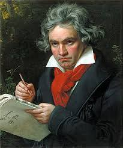

My favorite pianists
Listening to a skilled pianist can inspire listeners with expressive melodies and captivating emotion. Their performance often brings a sense of calm, creativity, and motivation. Many people find themselves encouraged to explore music more deeply after hearing a pianist play.
Ludwig van Beethoven
His music is bold and dramatic, mixing powerful emotions with moments of quiet intensity.

Wolfgang Amadeus Mozart
His works are elegant and graceful, known for their clarity and beautifully balanced melodies.

Frédéric Chopin
His pieces are expressive and lyrical, filled with emotion and a gentle, poetic style.

Johann Sebastian Bach
His music features clear structure and intricate patterns that create a balanced, harmonious sound.
